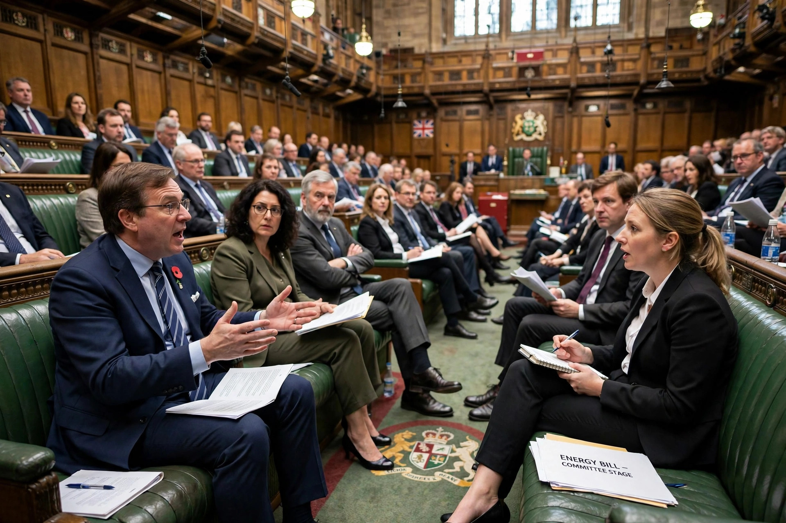

A private member's bill is a bill introduced into a legislature by a legislator who is not acting on behalf of the government. The term is used in Westminster-system parliaments such as those of the United Kingdom, Canada, Australia, New Zealand and India; the equivalent proposals elsewhere are sometimes called backbench or members' bills.

In the UK House of Commons, private members' bills are introduced by ballot, by the ten-minute rule, or by presentation. Only a small number of Fridays each session are set aside for them, so most fail for lack of time or are talked out by filibuster unless the government supports them or allows a vote. Successful examples have nonetheless driven major social reforms, including bills on abortion, homosexual law reform and the abolition of capital punishment in the 1960s.
In Canada, private members' business is selected by lottery and has a higher chance of debate; in Australia and New Zealand such bills occasionally pass, especially during minority government. In India they are rarely enacted. In the United States, by contrast, nearly all bills are introduced by individual members, so the category does not exist in the same form.
Even when they fail, private members' bills raise issues, test opinion and pressure governments to legislate. Governments sometimes adopt the substance of a popular bill as their own.